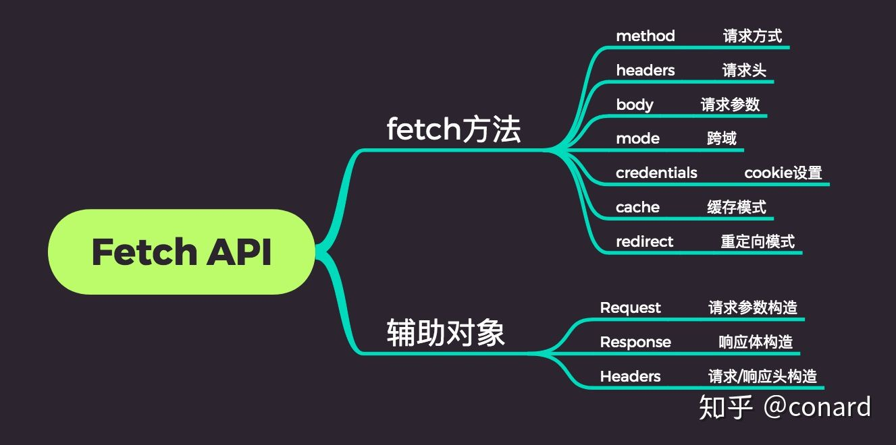

Ajax的全称是Asynchronous JavaScript and XML 中文名称定义为异步的JavaScript和XML(但由于JSON的许多优势,目前JSON的使用比XML更加普遍)。Ajax是Web2.0技术的核心由多种技术集合而成，使用Ajax技术不必刷新整个页面，只需对页面的局部进行更新，可以节省网络带宽，提高页面的加载速度，从而缩短用户等待时间，改善用户体验.
传统的web应用，当我们提交一个表单请求给服务器，服务器接收到请求之后，返回一个新的页面给浏览器，这种做法浪费了很多带宽.
Ajax的核心是XMLHttpRequest 是支持异步请求的技术，可以发送请求给服务器，并且不阻塞用户
总结：只要是JS调用异步通讯组件并使用格式化的数据来更新web页面上的内容或操作过程，那么我们用的方法就可算是AJAX。
form 表单提交后进行后台处理程序，没有直接返回值，只能进行后台处理,相当于放弃当前页面,后端返回新页面
1 | var xhr = new XMLHttpRequest(); |
1 | $.ajax({ |
Fetch API是一个用于访问和操纵HTTP管道的强大的原生 API。更底层的api,兼容支持差
1 | const options = { |

fetch缺点
可以对其进行封装,解决部分问题
它本身也是对原生XHR的封装。 - 支持node，创建http请求 - 支持Promise API - 客户端防止CSRF：每个请求带一个cookie拿到的key - 拦截请求和响应 - 可取消请求
1 | axios({ |
书写相对优雅,面对一些特殊情况(多请求串,并行)也有不错的可读性和处理方式
1 | // 串行 |
全面分析前端的网络请求方式
【研究与总结】关于前端请求的那些事(xhr/ajax/fetch/axios)